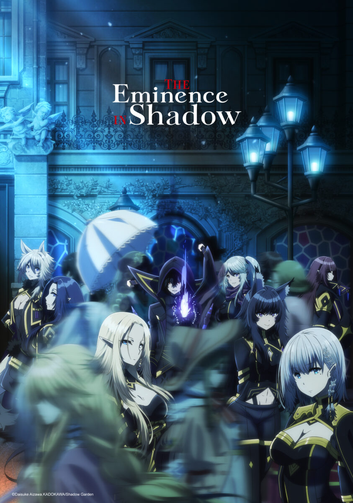

Pagína de Animes
O que é Anime
Anime é uma forma de arte, especificamente animação, que inclui todos os gêneros encontrados no cinema, mas ele pode ser erroneamente classificado como um gênero.No Japão, o termo refere-se a todas as formas de animação do mundo inteiro.Os dicionários de língua inglesa definem anime como um "estilo de animação japonesa" ou como "um estilo de animação criado no Japão".
Lista de Animes
A Crunchyroll revelou uma nova lista de aquisições durante sua participação na Anime Expo 2026, maior convenção de anime da América do Norte. Os títulos anunciados incluem continuações, novas adaptações e obras inéditas que devem reforçar o catálogo da plataforma nos próximos meses. Os principais retornos da leva são Diários de uma Apotecária, que chega à terceira temporada após consolidar Maomao como uma das protagonistas mais populares do anime recente. Já Gachiakuta, que volta para uma segunda temporada, tem como objetivo garantir a expansão do universo.

Anime em destaque
No Japão contemporâneo, um garoto chamado Minoru Kageno aspira a ser um gênio do crime, exercendo poder nas sombras. Durante seu treinamento secreto, um acidente inesperado o leva à morte prematura quando é atropelado por um caminhão . Para sua surpresa, ele renasce em um reino fantástico como Cid Kagenou. Lá, decide manter uma fachada de mediocridade, evitando os holofotes enquanto nutre secretamente seu sonho de orquestrar o poder nos bastidores. Enquanto Cid segue sua vida neste novo mundo, ele encontra uma elfa sofrendo de uma doença misteriosa. Usando seus conhecimentos adquiridos, Cid a cura com sucesso. Aproveitando a oportunidade, ele inventa uma história para a elfa, agora chamada Alpha, alegando que este mundo está sob o controle do nefasto Culto de Diablos. Cid, sob o disfarce de Shadow, o líder da organização secreta Jardim das Sombras, garante a Alpha que eles possuem os meios para derrotar o culto e restaurar a paz na terra. Com um novo propósito, Alpha torna-se uma membro entusiasmada do Jardim das Sombras, assumindo o papel de recrutadora e auxiliando Cid na expansão de sua influência. Sem que ela saiba, a luta pelo poder fabricada por Cid não é mera ficção; é uma dura realidade na qual ele, como Sombra, agora está ativamente envolvido. Sob o pseudônimo, ele navega pela complexa teia de intrigas políticas e conflitos mágicos, lutando contra as mesmas forças cuja existência ele inicialmente apenas fingia ter. Como Shadow, Cid se vê cada vez mais envolvido nos conflitos do mundo de fantasia, com as linhas entre sua história inventada e as lutas reais se tornando cada vez mais tênues. O outrora ambicioso gênio do crime agora enfrenta o desafio de fazer jus ao papel que criou e liderar o Jardim das Sombras na luta contra as ameaças genuínas representadas pelo Culto de Diablos
